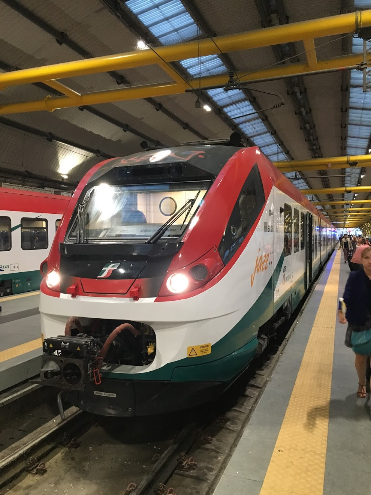

TRIPPERでは、これまで旅をしてきた世界の景色を紹介するサイトです。
これまで下記のような国・地域を旅してきました。
・中南米（ボリビア、ペルー、メキシコ）
・ヨーロッパ（イタリア、スペイン）
・アジア（カンボジア、ミャンマー、ベトナム）などを旅してきました。
有名な世界遺産から大自然の風景まで、さまざまな景色をお楽しみください。
一生に一度は訪れてみたい絶景が待ち構えています。大自然を前に圧倒されること間違いなしです。

協会やお城など、歴史的な建造物は圧巻です。街を歩くだけでも十分楽しめます。
一生に一度は訪れてみたい絶景が待ち構えています。大自然を前に圧倒されること間違いなしです。
| 中南米 | オススメ度 |
|---|---|
| ボリビア | ★★★★★ |
| ペルー | ★★★★☆ |
| メキシコ | ★★☆☆☆ |
| ヨーロッパ | オススメ度 |
| イタリア | ★★★★★ |
| スペイン | ★★★★☆ |
| アジア | オススメ度 |
| カンボジア | ★★★☆☆ |
| ミャンマー | ★★★★☆ |
| ベトナム | ★☆☆☆☆ |
| 首都 | ? |
|---|---|
| 人口 | ? |
| 面積 | ? |
| 日本との時差 | ? |
| オススメスポット | ? |